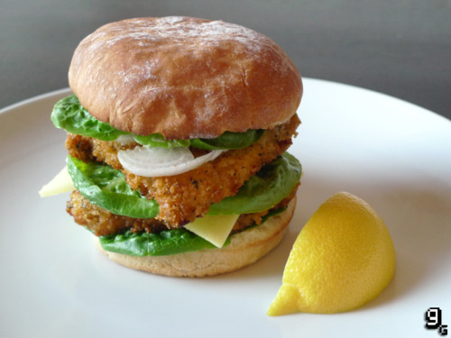

Hambúrguer do Cluckin Bell – Grand Theft Auto IV

Hambúrguer do Cluckin Bell, do jogo GTA IV
Ingredientes:
- Azeite de oliva
- 1 peito de frango grande
- 50 gramas de migalhas de pão
- >1 colher de sopa de cominho moído
- 1 colher de sopa de coentro moído
- 1 colher de sopa de pimentão
- 1 ovo
- Farinha de rosca
- Ketchup
- Maionese
- Pão branco para hambúrguer
- Folhas de alface lisa
- 1 cebola pequena
- 1 fatia de queijo cheddar
Modo de preparo
- Adicione o cominho, o coentro e o pimentão com a farinha de rosca em uma tigela e misture bem
- Agora, bata o ovo em outro recipiente
- Aqueça uma boa quantidade de azeite de oliva em uma frigideira em fogo médio
- Corte o peito de frango ao meio para obter dois pedaços com 1 cm de espessura
- Mergulhe os peitos de frango no ovo batido e depois também na mistura do passo 1
- Quando o óleo estiver quente, frite os peitos de frango por cerca de 4 minutos de cada lado ou até que eles estejam dourados
- Toste o pão e, em seguida, faça as camadas da seguinte forma: pão, ketchup, alface, frango, queijo, alface, frango, alface, maionese, cebola cortada e, depois, o topo do pão
- Sirva com batatas fritas e com uma Sprunk — uma bebida típica do GTA
Voltar